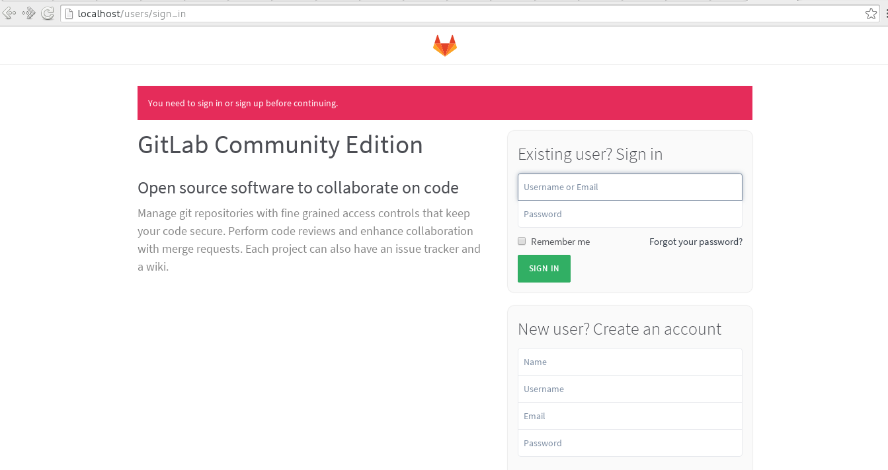

Instalar Gitlab por medio de Docker
Posted on Wed 20 January 2016 in Tutorial de Docker • 2 min read
Lo artículos anteriores de docker son los siguientes:
- Instalar Docker en Debian Jessie
- Uso de Docker en Debian Jessie (parte 1)
- Uso de Docker en Debian Jessie (parte 2)
- Crear una imagen Docker con un archivo Dockerfile
- Iniciando Django usando Docker
En el primer artículo de uso de Docker en Debian Jessie se muestra al final como usar SonarQube por medio de Docker con dos instancias de la misma imagen.
En esté artículo se bajará la imagen Docker de Gitlab edición comunitaria. El sitio donde se aloja está en el siguiente enlace y la documentación en inglés a la cual se basa esté artículo está en el siguiente enlace.
Se ejecutará el gitlab-ce que se bajará del sitio de dockerhub. El comando es el siguiente:
docker run --detach --hostname pruebasgitlab --publish 443:443 --publish 80:80 --publish 22:22 --name gitlab --restart always --volume /srv/gitlab/config:/etc/gitlab --volume /srv/gitlab/logs:/var/log/gitlab --volume /srv/gitlab/data:/var/opt/gitlab gitlab/gitlab-ce:latest
- hostname: El nombre del host es pruebasgitlab.
- publish: publica el puerto 443, 80 y 22 de la instancia del contenedor.
- name: El nombre de la imagen es gitlab.
- restart always: Siempre levanta la instancia.
- volume: Se define unos volumenes (son directorios del host anfitrion que se montan en los contenedores), en este caso son 3 directorios.
- gitlab/gitlab-ce:latest: Se trae la última versión de la imagen de gitlab-ce.
El contenedor de Gitlab usa volumenes montados para datos persistentes:
/srv/gitlab/datase monta en/var/opt/gitlab/srv/gitlab/logsse monta en/var/log/gitlab/srv/gitlab/configse monta en/etc/gitlab
Para configurar el Gitlab se tiene un archivo que se tiene en el equipo /etc/gitlab/gitlab.rb.
Para acceder a la configuración se puede iniciar bash en el contenedor que está corriendo, esto permite navegar en la estructura de directorio y ejecutar cualquier programa:
docker exec -it gitlab /bin/bash
Ahora se puede editar el archivo /etc/gitlab/gitlab.rb .
También se puede editar con el siguiente comando:
docker exec -it gitlab vi /etc/gitlab/gitla.rb
Para habilitar configuraciones de https se puede revisar el siguiente enlace, o las configuraciones de smtp en este otro.
Para reiniciar el gitlab luego del cambio de configuraciones se ejecuta:
doker restart gitlab
A continuación se muestra una captura de pantalla del gitlab en funcionamiento desde Docker:

En este artículo se muestra como acceder a varios puertos como el 80,443 y el 22 el cual permite conectarse a dicho contenedor de manera remota.
¡Haz tu donativo! Si te gustó el artículo puedes realizar un donativo con Bitcoin (BTC) usando la billetera digital de tu preferencia a la siguiente dirección: 17MtNybhdkA9GV3UNS6BTwPcuhjXoPrSzV
O Escaneando el código QR desde la billetera: